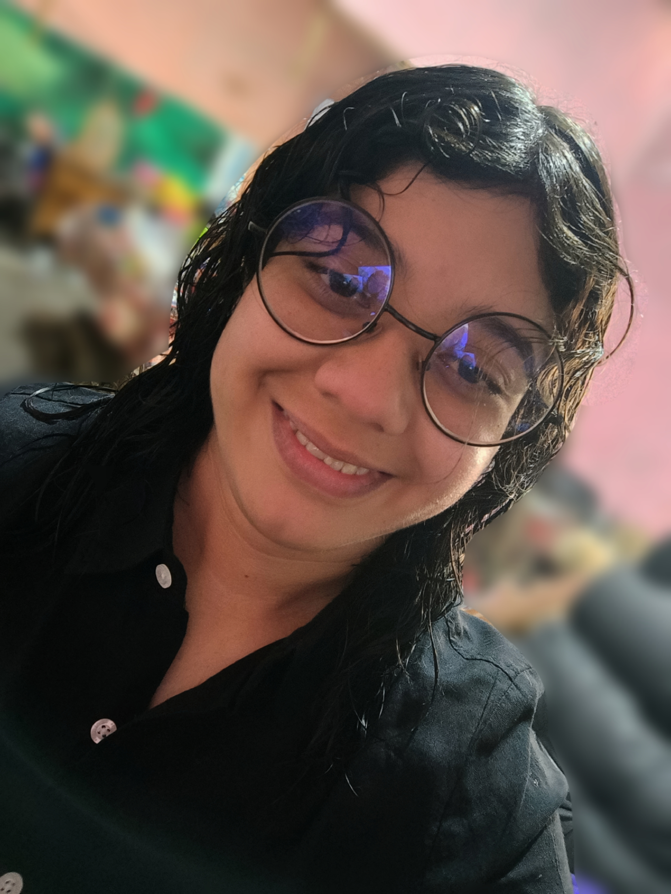

“"Con las TIC's busco cambiar mi entorno"
Resido en la Ciudad de México y estudio la Licenciatura en Tecnologías de la Información y Comunicación en la Universidad Nacional Rosario Castellanos. Trabajo medio tiempo como ayudante en una papelería y participo en cursos de formación en Pilares, especialmente en fotografía y actividades comunitarias.